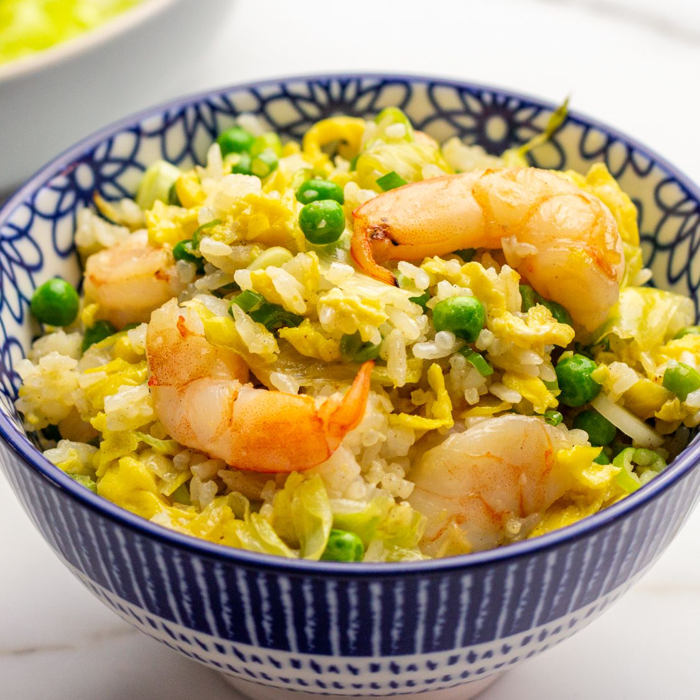

Fried Rice

Description
Fried rice is a staple in Chinese cuisine, and luckily, it can be very simple in ingredients and preparation. With some rice, veggies, protein, and a pan, you can easily whip up a delicious fried rice!
Ingredients
- 2 cups of cooked rice
- 1 pound of protein (tofu, egg, ground or diced meat of your choosing, etc.)
- 2 cups of diced vegetables of your choosing (frozen mixed vegetables are a great quick option)
- 1/2 bunch of green onions, chopped with the whites and greens separated
- 3-4 cloves of garlic, chopped or minced
- 1/2 tablespoon fresh ginger, minced (optional)
- 1 tablespoon soy sauce
- 1/2 tablespoon sesame oil
- salt and white pepper to taste
- vegetable oil
Instructions
- Mince or slice the garlic and ginger (optional), and slice the green onions, separating the whites from the greens.
- Dice your vegetables and/or protein, depending on what ingredients you chose.
- If you are using eggs and/or protein, heat 1-2 tablespoons of vegetable oil in the pan. Scramble the eggs or cook the protein through. Set aside when complete.
- Add more vegetable oil if needed, then add garlic, ginger, and the whites of the green onions into the oil while it's heating up, waiting until they become fragrant.
- Add the veggies that take longer to cook (for example, just the stems). Once they soften, add the remaining veggies, and saute for 2-3 minutes.
- Add in the cooked rice, and mix well with the veggies. Add 1 tablespoon of soy sauce, and salt and white pepper to taste.
- Once the veggies and rice look almost done, add the scrambled eggs, protein, and the greens of the green onions back in.
- Cook for another 2-3 minutes. Serve immediately, or save in the refrigerator for 3-4 days. Enjoy!